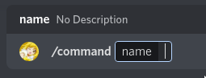

Commands#
Before you can create a command, you need to create a bot.
Warning
Storing your token in your source code is a bad idea. Store your TOKEN in a .env file.
The first command we will make is the ping command.
bot = hikari.GatewayBot("YOUR_TOKEN")
client = crescent.Client(bot)
# Commands can be defined after you create the client variable
# and before `bot.run()`
@client.include
@crescent.command(name="ping", description="Ping the bot.")
class PingCommand:
async def callback(self, ctx: crescent.Context) -> None:
await ctx.respond("Pong!")
bot.run()
bot = hikari.RESTBot("YOUR_TOKEN")
client = crescent.Client(bot)
# Commands can be defined after you create the client variable
# and before `bot.run()`
@client.include
@crescent.command(name="ping", description="Ping the bot.")
class PingCommand:
async def callback(self, ctx: crescent.Context) -> None:
await ctx.respond("Pong!")
bot.run()
⚠️ Commands must call
await ctx.respond()within 3 seconds or callawait ctx.defer()to get 15 minutes to respond.
So what's going on here? @crescent.command turns your class into a command object.
@bot.include adds the command to your bot. Many objects in Crescent can be added
to your bot with @bot.include, these are called Includables and we will go over
them in more detail later.
If you are new to Python, you may not have seen ctx: crescent.Context before. This
is called a type hint. It tells the reader what type ctx is, and your IDE can use
type hints to provide better autocomplete. Although they are not required, it is
recommended to use type hints whenever you can.
# The name of the argument The return type
# \/ \/
def my_function(argument: SomeType) -> None:
# /\
# The type of the argument
#
# The argument name and argument type
# are separated with a colon.
Adding Options#
Options are added by adding class-attrs to the class.
@client.include
@crescent.command(name="say")
class SayCommand:
# The name of the command option
# \/
word = crescent.option(str)
# /\
# The type of the command option
async def callback(self, ctx: crescent.Context) -> None:
# options are accessed attributes on the class
await ctx.respond(self.word)
Crescent's option syntax is type safe. This means that commands will seamlessly work with typecheckers like mypy and pyright. (You don't need to worry about this if you are new to Python!)
Class commands can be cumbersome for small commands. Crescent provides function commands for those cases.
It is recommended to use function commands when your command does not have any options.
User and Message commands#
So far only slash commands have been covered. There is two more types of application commands: user context menu and message context menu commands. You can use these by right clicking on a user or message respectively.
Both user and message commands are only supported as functions.
@bot.include
@crescent.user_command
async def user_command(ctx: crescent.Context, user: hikari.User):
...
@bot.include
@crescent.message_command
async def message_command(ctx: crescent.Context, message: hikari.Message):
...
Command Options#
This is what a command with an option called name looks like in the Discord client..

Options can also have a custom description and name. If no description is provided,
the description will default to "No Description". This example shows an option
amed "option" with the description "your custom description". The secondoption, option2,
has the name "custom-name" and description "also your custom description".
@client.include
@crescent.command
class MyCommand:
option = crescent.option(str, "your custom description")
option2 = crescent.option(str, name="custom-name", description="also your custom description")
async def callback(self, ctx: crescent.Context) -> None:
...
# The `...` is a placeholder that means that your code
# should go there instead.
Option Types#
Crescent provides these option types. You can find more information on option types here (You can ignore SUBCOMMAND and SUBCOMMAND_GROUP for now.)
This might look a bit daunting, but we will go into detail on what each option type is in this section.
| Type | Option Type |
|---|---|
str |
Text |
int |
Integer |
bool |
Boolean |
float |
Number |
hikari.User |
User |
hikari.Role |
Role |
crescent.Mentionable |
Role or User |
hikari.PartialChannel |
Channel. The options will be the channel type and its subclasses. |
list[hikari.PartialChannel] |
Channel. ^ |
hikari.Attachment |
Attachment |
Making Parameters Optional#
Options will be optional if a default value is provided. This example
shows an option with the default value None.
@client.include
@crescent.command(name="command")
class MyCommand:
optional_option = crescent.option(str, default=None)
async def callback(self, ctx: crescent.Context) -> None:
...
More Information on Types#
Strings, Ints, Floats, and Booleans all use python's built in types.
Note
If you are comfortable reading function overloads you can look at the source code.
@client.include
@crescent.command(name="command")
class MyCommand:
word = crescent.option(str)
integer = crescent.option(int)
number = crescent.option(float)
boolean = crescent.option(bool)
async def callback(self, ctx: crescent.Context) -> None:
# You can now do something with the options.
await ctx.respond(
f"{self.word}\n{self.integer}\n{self.number}\n{self.boolean}"
)
These types use a hikari object.
import hikari
@client.include
@crescent.command(name="command")
class MyCommand:
user = crescent.option(hikari.User)
role = crescent.option(hikari.Role)
attachment = crescent.option(hikari.Attachment)
# The channel type will be restricted depending on what
# channel object you choose. In this example only channels
# that users can type in can be chosen.
channel = crescent.option(hikari.TextableChannel)
# This option can only be voice channels.
voice_channel = crescent.option(hikari.GuildVoiceChannel)
async def callback(self, ctx: crescent.Context) -> None:
...
The final option type is mentionable, which allows a user to choose a user or role.
import hikari
@client.include
@crescent.command(name="command")
class MyCommand:
mentionable = crescent.option(crescent.Mentionable)
async def callback(self, ctx: crescent.Context) -> None:
if self.mentionable.user:
# This is a user. `mentionable.role` will be `None`.
await ctx.respond("You picked a user!")
if self.mentionable.role:
# This is a role. `mentionable.user` will be `None`.
await ctx.respond("You picked a role!")
Autocomplete#
Autocomplete is a way for your command to suggest values for an option.
The autocomplete= kwarg can be used for int, float, and str types.
async def autocomplete_response(
ctx: crescent.AutocompleteContext, option: hikari.AutocompleteInteractionOption
) -> Sequence[tuple[str | int | float, str]]:
return [("Some Option", "1234")]
@client.include
@crescent.command
class class_example:
result = crescent.option(str, "Respond to the message", autocomplete=autocomplete_response)
async def callback(self, ctx: crescent.Context) -> None:
await ctx.respond(self.result, ephemeral=True)
Options can also be accessed inside the callback. The ctx.options dictionary contains snowflakes or
values for all the options a user has already filled out. The ctx.fetch_values function converts the
snowflakes in this dictionary to the correct type and returns it. If you bot object is hikari.impl.CacheAware
these values are fetched from the cache. Otherwise, they need to be fetched from a REST endpoint.
async def fetch_autocomplete_options(
ctx: crescent.AutocompleteContext, option: hikari.AutocompleteInteractionOption
) -> Sequence[tuple[str, str]]:
# An option dict where discord objects are all snowflakes.
options = ctx.options
# Return options with snowflakes converted into the option types.
options = await ctx.fetch_options()
# Return no options.
return []
bot.run()
Command Groups#
Commands can be grouped or grouped into groups of groups.
In Crescent these groups are called groups and sub_groups.
import crescent
# Create a group
group = crescent.Group("outer-group")
# Create a sub group
sub_group = group.sub_group("inner-group")
To add a command to a group simply do:
@client.include
@group.child
@crescent.command
async def group_command(ctx: crescent.Context):
...
@client.include
@sub_group.child
@crescent.command
async def sub_group_command(ctx: crescent.Context):
...
Do not combine the group and sub_group decorators. This will cause a command to be
registered multiple times.
You can not create a group with the same name as a command.